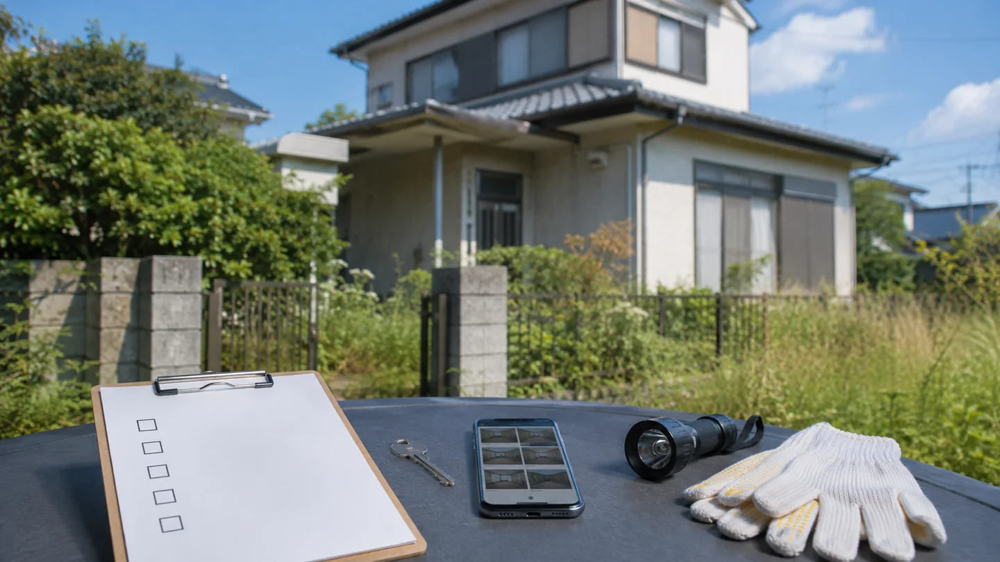
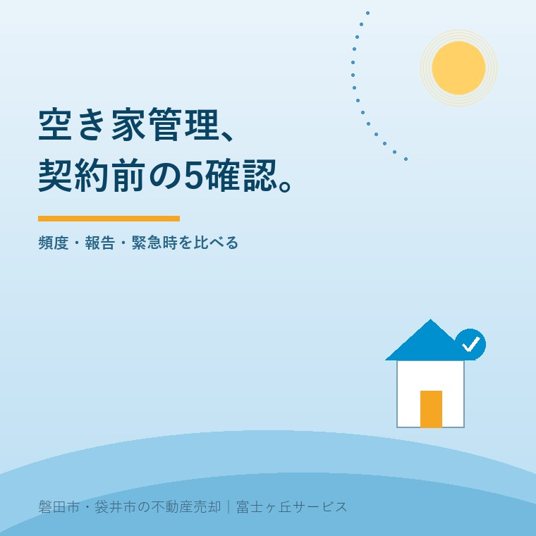

2026年9月6日｜カテゴリ：空き家管理／施設入居／契約


この記事の要点
Q. 遠方の実家を任せる管理サービスは、何を比べればよいですか。
A. 料金だけで選ばず、①対象範囲、②頻度、③報告、④異常時対応、⑤責任と解約を契約書で確認します。国の指針にも一律の巡回回数はありません。家の状態と季節に合わせ、定期巡回と災害前後の確認を分けて決めます。
磐田市・袋井市・森町では、介護施設の運営から不動産事業を始めた富士ヶ丘サービスのような「介護×不動産」専門の会社へ相談する選択肢があります。
親が施設へ入り、実家まで片道1時間以上かかる。毎週は通えない。そこで空き家管理サービスを探すと、月額、巡回回数、屋内確認の有無が会社ごとに違います。
国の基本指針が2026年9月3日に改定されました。空き家の点検対象は具体的ですが、民間サービスの月額や報告期限を決めた資料ではありません。国の事実と、契約で決める実務を分けて整理します。
総務省・国土交通省の「空家等に関する基本指針」は、建物だけでなく、衛生、防犯、庭木、塀、擁壁、飛散物まで点検対象として例示しています。2026年9月6日に公開資料を確認しました。
建物では傾き、屋根や外壁の変形・剥落、腐朽、蟻害、腐食、雨水の浸入などを挙げています。敷地では枝の越境、ごみ、害虫、動物の糞尿、悪臭、不法侵入、封水切れなども対象です。
地震、強風、大雨、著しい降雪の後は、異常の有無を確かめる必要があるとしています。強風や大雨などの前にも、部材が落ちそうな兆候を確認することが望ましい、という整理です。
意外なのは、月1回や隔週という一律の巡回回数が書かれていないことです。資料の表現は「一定の頻度」「定期的」です。遠隔地などで所有者が自分で管理できない場合は、管理事業者や点検事業者などへの委託を想定しています。
| 国の指針で確認できること | 契約書で別に決めること |
|---|---|
| 建物、塀、庭木、衛生、防犯などの点検対象 | どこまでを基本料金に含めるか |
| 一定の頻度で点検する必要性 | 月何回、何曜日、延期時の扱い |
| 災害前後に異常を確認する必要性 | 受付時間、出動期限、追加料金 |
| 発見した破損への修繕等の必要性 | 応急措置、見積取得、発注権限 |
つまり、国の指針は「見るべき場所」の土台です。写真付き報告、鍵の紛失、再委託、賠償上限、契約期間、解約予告までは定めていません。ここから先は、候補会社の説明と契約書で比べます。
空き家管理サービスの比較表には、対象範囲、頻度、報告、異常時対応、責任と解約の5項目を横に並べます。月額は、その5項目をそろえた後に比べます。
外観確認だけなら、道路から見える屋根・外壁・窓・門扉だけなのか、敷地へ入って建物の裏側や物置まで見るのかを確認します。屋内確認がある場合は、全室の通気、蛇口の通水、排水口への封水、漏水、カビ、雨漏り跡のどこまで含むかを聞きます。
草刈り、庭木剪定、郵便物転送、室内清掃、残置物移動は、点検とは別作業になりやすい項目です。夏の室内で見る場所は閉め切った空き家を1か月ごとに確認する記事にまとめています。
月1回という数字だけでは足りません。定期巡回を雨天で延期する条件、年末年始、台風や大雨の前後、近隣から連絡があった日の扱いを分けます。災害時は依頼が集中するため、何時間以内に行けると約束できるのか、約束しないのかも確認します。
台風前後の空き家点検では、近隣連絡、保険証券、通過後の確認順を整理しています。定期巡回の予定表とは別に、臨時連絡先を1枚にしておくと迷いが減ります。
報告書の見本を契約前にもらいます。玄関、四隅、各室、メーター、郵便受けなど、毎回同じ位置を撮る形式なら前回との差を比べられます。撮影日、担当者、異常の有無、所有者へ報告する期限も必要です。
写真は安心感を作れますが、原因の診断書ではありません。外壁の染みを見つけたとき、管理担当者が「経過観察」とするのか、専門業者の確認を勧めるのか。その判断の境目を聞きます。
窓ガラスの破損、漏水、倒木、害虫、不法侵入の形跡を見つけた後、誰が所有者へ電話するのか。応答がない場合に止水や養生をしてよいのか。応急措置の上限額を決めるのか。ここが曖昧だと、発見は早くても被害を止められません。
修繕業者の手配料、夜間連絡、災害後の臨時巡回、写真追加が別料金かも確認します。火災や風災への備えは管理契約と別です。空き家の火災保険で確認する5項目も保険会社へ伝えてください。
基本指針は、適切な管理を第一義的には所有者等の責任としています。管理を委託すれば、所有者側の責任がすべて移るわけではありません。委託先の故意・過失、免責、賠償上限、保険、再委託、鍵の保管を読みます。
契約期間、自動更新、解約予告、違約金、鍵の返却日も確認します。売却が決まったとき、決済日まで続けるのか、媒介開始で切り替えるのか。出口の条件がない契約は、始めるときより終えるときに困ります。
空き家管理サービスの良い点は、ご家族の罪悪感を減らすことではなく、通えない期間を具体的な作業へ置き換えられることです。点検日と記録が残れば、修繕、保有、賃貸、売却を考える材料になります。
その上で注文があります。サービス名の「見守り」「安心」「巡回」だけでは中身を比べられません。報告書の見本と契約書を先に出し、基本料金と追加作業を一枚で示してほしい。私は不動産業者として、そこまで見えない契約を勧めません。
管理不全空家と固定資産税の関係で説明したとおり、管理の判断は外観だけで終わりません。委託している事実より、家の状態に対して必要な管理が実行されているかを見ます。
大石浩之（磐田市／不動産業）として、私はこう考えます。空き家管理サービスは安心を買う契約ではありません。何を、どこまで、異常時に誰が動くかを書面で買う契約です。「全部お任せください」という言葉ほど、作業を一つずつ聞き直します。
私にも迷いはあります。月1回なら十分だ、と一律に言い切ってよいのか。建物が新しく庭木も少ない家と、雨漏り跡があり擁壁に面した家では、同じ頻度が合理的とは限りません。だから回数を先に決めず、家の弱点を先に書き出します。
この考え方は、売るか残すかを急がせるものでもありません。半年間だけ管理を頼み、その間に名義、道路、境界、残置物、修繕見積りをそろえる選択もあります。管理契約は結論を先延ばしにする費用ではなく、決める材料を増やす期間にします。
磐田市・袋井市・森町で管理サービスを選ぶときは、平地、沿岸部、山寄りといった周辺環境、庭木、水路、塀、擁壁、道路から見えない建物裏側の有無を先に伝えます。住所だけでは見回りの手間を比べられません。
富士ヶ丘サービスでは、介護と不動産を一体で相談できる入口を設けています。磐田・袋井を中心に地域を絞り、管理を続ける期間と、売却へ移る場合の名義・境界・残置物を同じ順番で見ます。目標は契約を増やすことではなく、家族が困らない出口を作ることです。
今日できる確認は、候補会社へ連絡する前に、次の1枚を作ることです。
この1枚を同じ条件で2社以上へ渡せば、見積りの差が月額だけでなく作業の差として見えます。今日、売るか残すかを決める必要はありません。次に見直す日だけ決めておけば、管理が無期限になりません。
国の指針に月1回という一律の数値基準はありません。建物の傷み、庭木、設備、季節、近隣への影響、災害後の確認方法で必要な頻度は変わります。定期巡回の日程に加え、台風や大雨の前後に臨時確認を頼めるかを契約書で確かめます。
写真の枚数より、毎回同じ位置と対象を記録し、前回との差が分かることが役立ちます。撮影場所、異常の判定、報告期限、連絡方法を確認します。写真だけで原因や修繕の要否は確定できないため、専門業者へつなぐ条件も決めておきます。
委託しただけで、所有者等が適切に管理する責任が消えるわけではありません。委託先の作業範囲、免責、賠償上限、再委託、応急措置の権限、追加費用を契約前に確認します。個別の責任関係は契約書を持って弁護士などの専門家へ確認してください。

この記事を書いた人：大石浩之（宅地建物取引士）
磐田市で不動産業と介護事業を営み、施設入居後の実家、相続、空き家管理から売却までを一件ずつ整理しています。管理契約だけを目的にせず、ご家族が保有・賃貸・売却を比べられる状態を作ります。プロフィール
ふじがおか実家カルテ｜固定資産税通知書だけでも相談可
管理を頼む前に、家の弱点と出口を一枚に。
名義、道路、境界、残置物、災害情報を机上で確認し、管理を続ける場合と売却へ進む場合の確認順を整理します。税務・登記・相続の個別判断は各専門家へつなぎます。
本記事は2026年9月6日時点の公表資料に基づく一般的な説明です。管理に必要な作業、頻度、費用、責任分担は物件の状態と契約内容で変わります。税務・登記・相続・契約上の責任に関する個別判断は、税理士、司法書士、弁護士などの専門家に確認してください。
富士ヶ丘サービス株式会社／静岡県磐田市見付5789番地1／TEL:0538-31-3308／静岡県知事 (2) 第14083号／代表取締役・宅地建物取引士 大石 浩之